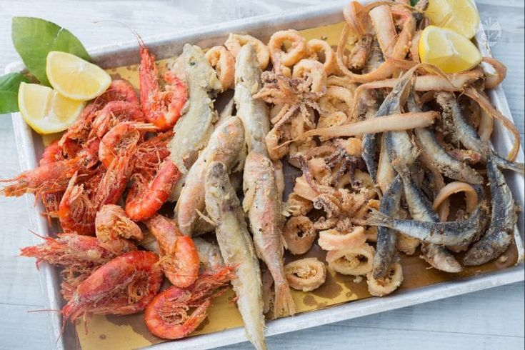

Fried mixed seafood

Intermediate Course:
Its unmistakable scent can be recognized a mile away, and it is one of the most ordered dishes in seafood restaurants.
The desire hits when you see it pass by, and you never know whether to order it as an appetizer or leave it for later to enjoy as a second course!
But fried mixed seafood is not only this, it is also a street food to be enjoyed on vacation while strolling through the streets of the city or enjoying a summer aperitif by the sea at sunset.
But if you don't want to go that far, just go to your trusted fish market, buy the freshest fish and run home to start cooking!
You will be able to satisfy your palate in a few minutes: follow our steps for a great crispy fried mixed seafood.
Complete your dinner with a good lemon sorbet and you will feel like you are still on vacation!
Ingredients
- Shrimps 12 - red
- Anchovies 12
- Red mullet 4
- Codfish 4
- Bandfish 9 oz (250 g)
- Calamari (squid) 2 ¾ cups (350 g)
- Semolina 9 oz (250 g)
- Fine salt to taste
For frying
Steps
- To prepare the fried mixed seafood, first clean the fish. Take the goatfish and rinse them under running water, and use scissors or your hands to remove the part of the belly with the entrails.
- Rinse them again and set aside. Repeat the same operation for the cod, anchovies and bandfish.
- Now move on to the calamari. Take the mantle off of the head and remove the cuttlebone.
- Wash the mantle under running water and discard the entrails.
- Make a slight incision and remove the skin using a small knife.
- Wash the calamari again under water, then cut the fins to separate them from the mantle and cut the rest into rings .
- Take the tentacles and eliminate the eyes using a knife; then, pushing it out with your fingers, remove the beak found in the center of the tentacles
- Rinse the shrimp under water.
- Heat the oil in a pan until it reaches a temperature of 356- 374° F (180-190° C) (to be measured with a kitchen thermometer).
- In the meantime, pour the semolina into a low, wide container. When the oil has reached the right temperature, completely flour the cod (11-12).
- Remove the excess semolina and dip the fish one at a time in the boiling oil.
- Flour the goatfish and fry them together with the cod.
- Wait 3-4 minutes; when they are golden, drain them and transfer them to a tray lined with oil-absorbing paper.
- Flour the calamari and use a sieve to remove the excess flour by shaking it.
- Fry for a few minutes until golden and place them next to the other fish.
- Next flour the anchovies, remove the excess semolina and immerse in oil
- Then flour the bandfish and fry them together with the anchovies.
- Wait a few minutes minutes until they are golden, drain them and transfer them to a tray lined with oil-absorbing paper.
- Now move on to the shrimp. Flour them in the semolina (28-29), then dip them in the hot oil.
- Wait about a minute and when they are golden, drain them and move them to the tray together with the other fish.
- Decorate with lemon slices and serve the fried mixed seafood warm.
Return to top
Return to Main Page